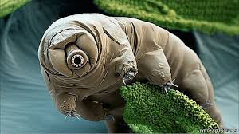
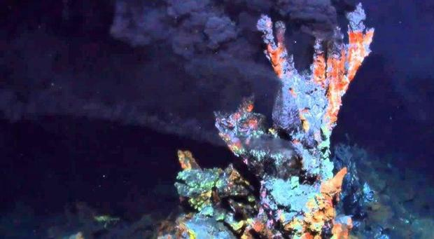
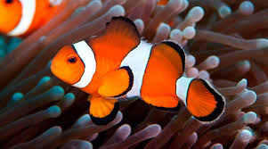
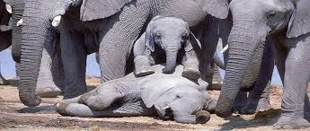
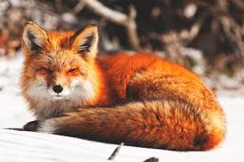
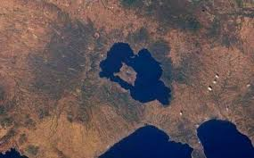
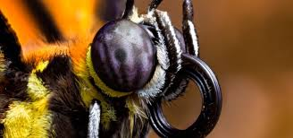
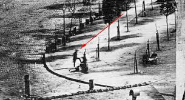

Aqui veras datos cientificos curiosos e interesantes.
Nota: Estas imagenes no nos pertenecen.
¿El ser vivo indestructible?

Se les llama ositos de agua, pero además de su aspecto, en realidad los tardígrados no
tienen nada de tiernos. De hecho son una de las criaturas más resistentes del planeta Tierra:
pueden sobrevivir en el espacio (toleran temperaturas de -272 grados centígrados), pueden
vivir bajo presiones extremas, como las encontradas en los océanos más profundos, y pueden
sobrevivir durante decenios sin agua.
¿El primer organismo?

En los últimos días se determinó que LUCA («Last Ultimate Common Ancestor» o en
español: el último antepasado común) es el organismo del que descendemos todos los
seres vivos de la Tierra. A partir de allí, los investigadores han tratado de determinar
las características de este ser excepcional y propagar la vida tal y como la
conocemos.
¿El animal que cambia de sexo?

El cambio de sexo del pez payaso, de macho a hembra, se produce cuando muere el ejemplar hembra
y comienza a experimentar cambios neuronales que, finalmente, conducen a la transformación de los
testículos en ovarios.
¿Los elefantes tambien tienen sentimientos?

La capacidad del elefante para la tristeza y la pena es verdaderamente única entre los miembros
del mundo animal. Mientras que la mayoría de los animales no dudan en dejar a los débiles y
jóvenes atrás para morir, los elefantes están angustiados por la situación, y continúan
mostrando signos de esta pena durante largos períodos de tiempo.
¿Los zorros ladran?

Los zorros no se comunican ladrando como lo hacen otros caninos, por el contrario, se basan
exclusivamente en la comunicación no verbal. Esto incluye características singulares en la postura
del cuerpo, el movimiento de sus colas, y sus expresiones faciales. Algunas de sus comunicaciones
verbales incluyen gritos, y los mismos suenan como gritos de los humanos.
¿Porque los doctores recomiendan horinar sentados?
Estudios, entre ellos los realizados por investigadores del Departamento de Urología del Leiden
University Medical Center (LUMC), en Holanda, demostraron que los hombres deberían orinar
sentados, ya que es beneficioso para su salud y para tener una vida sexual sana.
¿Islas dobles?

Vamos imaginar una isla en el mar y que dentro de esa isla haya un lago, que puede ser de agua
salada o de agua dulce. Puede ocurrir que dentro de este lago también exista una pequeña o
mediana isla al igual que sucede con los lagos que existen en los continentes.
¿Arcoiris lunares?

Un arcoíris lunar o arco iris lunar (también conocido como arcoíris blanco o sencillamente arco
lunar)1 es un arcoíris que ocurre por la refracción de la luz, en este caso lunar, sobre una
lluvia o neblina nocturna. Los arcos iris lunares son relativamente tenues, debido a la escasa
cantidad de luz que llega desde la Luna. Como los arcos iris, los arcos lunares se encuentran
siempre en el lado opuesto del cielo desde el que llega la luz de la luna.
¿Cuantos ojos tienen las mariposas monarcas?

Los ojos de las mariposas están formados por millares de pequeños ojos llamados ommatidios
especificamente la cantidad de 12.000 ojos. Comovemos, los ojos de las mariposas son compuestos.
Cada ommatidio tiene su nervio óptico y sonidocristalino. La disposición del ommatidios sobre el
ojo tiene facetas abombadas de forma que cadauno puede mirar en una dirección ligeramente
diferente, lo que permite al insecto percibir el menor movimiento alrededor de él.
¿Porque la coca cola ligth flota y la normal no?
Si se ponen dos latas de Coca-Cola –una normal y otra light– en un recipiente con agua, la primera
se hundirá como una piedra, mientras que la segunda flotará, El azúcar es mucho más denso que el
edulcorante y que el agua y una Coca-Cola normal tiene el equivalente a 11 cucharadas.
¿Cuando fue la primera foto en la que sale una persona?

La primera fotografía, de una persona se tomó en 1838 (aunque existen discrepancias en cuanto a
esta fecha y algunos estudios del tema la ubican en 1839), realizada por Louis Daguerre en el
Boulevard du Temple en París en la que se ve a un hombre con la pierna levantada limpiandoce la
zapatillas.
¿Se puede estornudar mientras dormimos?
Es muy difícil estornudar mientras se está dormido, aunque puede ocurrir. Durante el sueño, la
actividad cerebral disminuye y el estímulo debe ser muy fuerte para que la transmisión del
impulso nervioso que provoca el estornudo se complete.
¿Quemamos calorias al pensar?
De acuerdo a una investigación del Consejo Superior de Investigaciones Científicas (CSIC), pensar
demasiado quema 350 calorías al día. Afirman que “el cerebro humano representa el 20% del peso
corporal y consume 20% de oxígeno y glucosa del organismo.